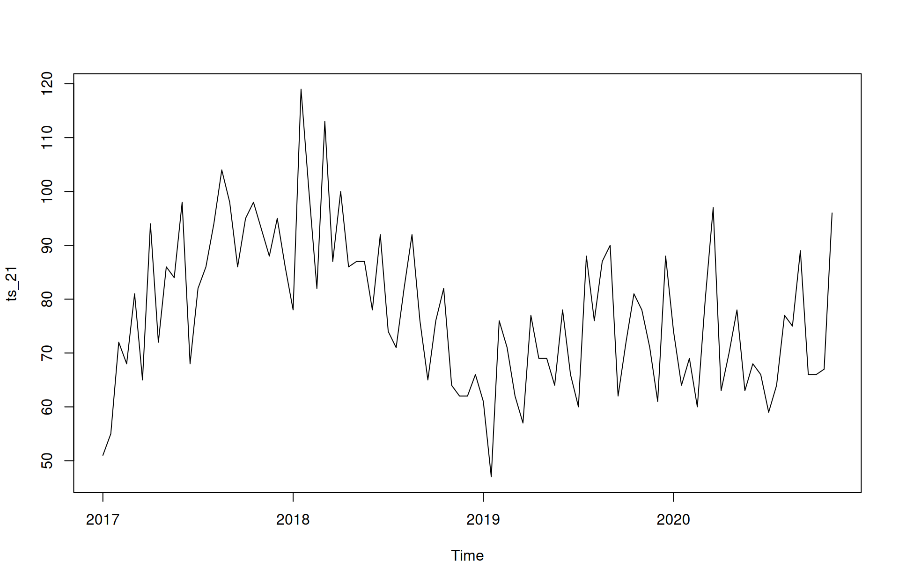
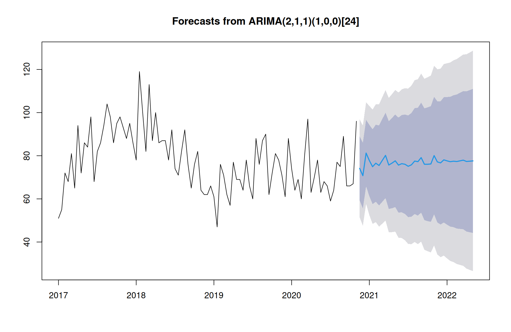

Homicidos en “”
## # A tibble: 93 × 3
## fecha `Homicidio_Homicidio-doloso` Clave_Ent
## <chr> <dbl> <fct>
## 1 31/01/17 51 21
## 2 28/02/17 55 21
## 3 31/03/17 72 21
## 4 30/04/17 68 21
## 5 31/05/17 81 21
## 6 30/06/17 65 21
## 7 31/07/17 94 21
## 8 31/08/17 72 21
## 9 30/09/17 86 21
## 10 31/10/17 84 21
## # ℹ 83 more rows

## Series: ts_21
## ARIMA(2,1,1)(1,0,0)[24]
##
## Coefficients:
## ar1 ar2 ma1 sar1
## -0.3191 -0.2966 -0.4738 0.1338
## s.e. 0.1646 0.1354 0.1510 0.1318
##
## sigma^2 = 134.4: log likelihood = -354.61
## AIC=719.21 AICc=719.91 BIC=731.82